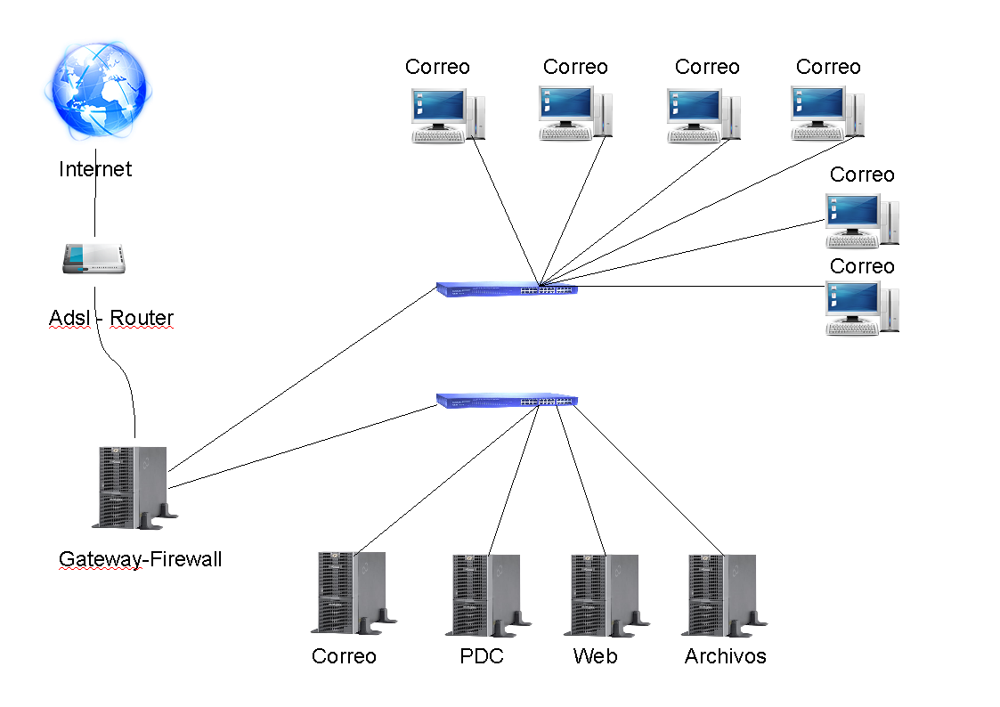
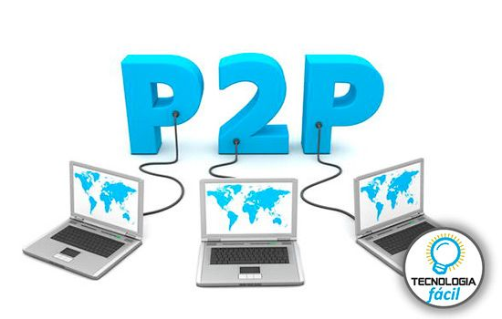

- Red computacional:Conjunto de computadoras conectadas entre si para el intercambio y administracion de datos a travez de esta.
- Internet:Red de equipos de computo que se comunican etre si empleando un lenguaje comun.
- Navegador:Programa que permite vizualizar paginas de internet.
- Buscador:Pagina de internet que te permite buscar paginas de internet.
- HTTP y HTTPS:HTTP Hyper Text Transfer Protocol Protocolo de red para publicar paginas de internet, HTTPS indica que se esta usando proteccion al transferir informacion.
- HTML:Hyper Text Markup Language lenguaje usado por los navegadores para mostrar paginas de internet.
- URI y URL:URI Uniform Resource Identifire Identifica recursos de internet URL Uniform Resource Locator Nombra recursos en internet.
- Dominio de internet:Nombre que sirve para identificar direcciones de computadoras conectadas a internet.
- Direccion IP:Numero dividido en 4 partes usado como identificador unico.
- Router:Hardware que funciona como semaforo para controlar las señales que trafican dentro de una red.
- VPN:Virtual Private Network Red de comunicaciones inalambricas que usa infraestructuras de internet para proveer conexiones remotas a redes de una organizacion.
- Ancho de banda:Medida que define la velocidad de tu conexion a internet.
- Escalabilidad:Propiedad de aumentar la capacidad de tamaño de un sistema sin comprometer su funcionamiento y calidad normales.
- WiFi:Marca registrada que nombra la tecnologia con la que se conectan dispositivos elctronicos de manera inalambrica.
- Red social:Pagina web donde se intercambia informacion personal y contenido multimedia.
- La nube:Almacenamiento masivo de datos en servidores.
- SSL:Secure Sockets Layer Protocolo que permite que las aplicaciones transmitan informacion de forma segura.
- Blog:Pagina web con estructura cronologica actualizable que trata un tema en especifico.
- ISP:Internet Sevice Provider Proveedor de servicios de internet por una cuota mensual.
- P2P:Peer-to-peer Red sin clientes ni servidores fijos.
- Streaming:Escuchar musica o ver videos sin descargarlos antes de verlos.
- IM:Mensajeria instantanea, comunicacion en tiempo real basada en texto.
- VoIP:Voice over internet protocol hardware y software que permite usar internet como transmision de llamadas telefonicas.
- Malware:Malicious software Programa o codigo malicioso que daña un sistema o logra un mal funcionamiento.
- Phishing:Captacion de datos personales de manera ilicita por internet.
- Troyano:Software malicioso que se presenta como un programa inofensivo pero que al ejecutarlo brinda acceso remoto al equipo.
- Spyware:Software que recopila informacion de un ordenador y despues la transmite sin concentimiento del propietario.
- Download:Copiar datos de una fuente principal a un dispositivo periferico.
- DRM:Digital Right Managament Medio que controla la distribucion de archivos digitales.
- SPAM:Correo no deseado que se envia a muchas personas con fines publicitarios.
- FTP:File Transfer Protocol Transfiere grandes bloques de datos por la red.





